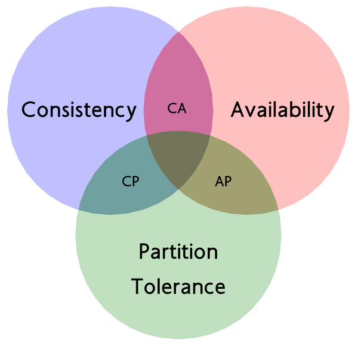
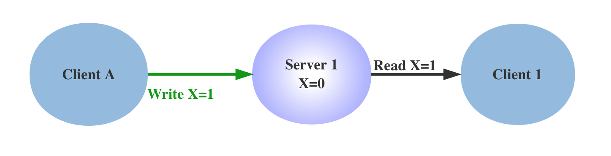

- 00 开篇词：搭建分布式知识体系，挑战高薪 Offer.md
- 01 如何证明分布式系统的 CAP 理论？.md
- 02 不同数据一致性模型有哪些应用？.md
- 03 如何透彻理解 Paxos 算法？.md
- 04 ZooKeeper 如何保证数据一致性？.md
- 05 共识问题：区块链如何确认记账权？.md
- 06 如何准备一线互联网公司面试？.md
- 07 分布式事务有哪些解决方案？.md
- 08 对比两阶段提交，三阶段协议有哪些改进？.md
- 09 MySQL 数据库如何实现 XA 规范？.md
- 10 如何在业务中体现 TCC 事务模型？.md
- 11 分布式锁有哪些应用场景和实现？.md
- 12 如何使用 Redis 快速实现分布式锁？.md
- 13 分布式事务考点梳理 + 高频面试题.md
- 14 如何理解 RPC 远程服务调用？.md
- 15 为什么微服务需要 API 网关？.md
- 16 如何实现服务注册与发现？.md
- 17 如何实现分布式调用跟踪？.md
- 18 分布式下如何实现配置管理？.md
- 19 容器化升级对服务有哪些影响？.md
- 20 ServiceMesh：服务网格有哪些应用？.md
- 21 Dubbo vs Spring Cloud：两大技术栈如何选型？.md
- 22 分布式服务考点梳理 + 高频面试题.md
- 23 读写分离如何在业务中落地？.md
- 24 为什么需要分库分表，如何实现？.md
- 25 存储拆分后，如何解决唯一主键问题？.md
- 26 分库分表以后，如何实现扩容？.md
- 27 NoSQL 数据库有哪些典型应用？.md
- 28 ElasticSearch 是如何建立索引的？.md
- 29 分布式存储考点梳理 + 高频面试题.md
- 30 消息队列有哪些应用场景？.md
- 31 集群消费和广播消费有什么区别？.md
- 32 业务上需要顺序消费，怎么保证时序性？.md
- 33 消息幂等：如何保证消息不被重复消费？.md
- 34 高可用：如何实现消息队列的 HA？.md
- 35 消息队列选型：Kafka 如何实现高性能？.md
- 36 消息队列选型：RocketMQ 适用哪些场景？.md
- 37 消息队列考点梳理 + 高频面试题.md
- 38 不止业务缓存，分布式系统中还有哪些缓存？.md
- 39 如何避免缓存穿透、缓存击穿、缓存雪崩？.md
- 40 经典问题：先更新数据库，还是先更新缓存？.md
- 41 失效策略：缓存过期都有哪些策略？.md
- 42 负载均衡：一致性哈希解决了哪些问题？.md
- 43 缓存高可用：缓存如何保证高可用？.md
- 44 分布式缓存考点梳理 + 高频面试题.md
- 45 从双十一看高可用的保障方式.md
- 46 高并发场景下如何实现系统限流？.md
- 47 降级和熔断：如何增强服务稳定性？.md
- 48 如何选择适合业务的负载均衡策略？.md
- 49 线上服务有哪些稳定性指标？.md
- 50 分布式下有哪些好用的监控组件？.md
- 51 分布式下如何实现统一日志系统？.md
- 52 分布式路漫漫，厚积薄发才是王道.md
01 如何证明分布式系统的 CAP 理论？
本课时我们主要介绍分布式系统中最基础的 CAP 理论及其应用。 对于开发或设计分布式系统的架构师、工程师来说，CAP 是必须要掌握的基础理论，CAP 理论可以帮助架构师对系统设计中目标进行取舍，合理地规划系统拆分的维度。下面我们先讲讲分布式系统的特点。
分布式系统的特点
随着移动互联网的快速发展，互联网的用户数量越来越多，产生的数据规模也越来越大，对应用系统提出了更高的要求，我们的系统必须支持高并发访问和海量数据处理。 分布式系统技术就是用来解决集中式架构的性能瓶颈问题，来适应快速发展的业务规模，一般来说，分布式系统是建立在网络之上的硬件或者软件系统，彼此之间通过消息等方式进行通信和协调。 分布式系统的核心是可扩展性，通过对服务、存储的扩展，来提高系统的处理能力，通过对多台服务器协同工作，来完成单台服务器无法处理的任务，尤其是高并发或者大数据量的任务。 除了对可扩展性的需求，分布式系统还有不出现单点故障、服务或者存储无状态等特点。
- 单点故障（Single Point Failure）是指在系统中某个组件一旦失效，这会让整个系统无法工作，而不出现单点故障，单点不影响整体，就是分布式系统的设计目标之一；
- 无状态，是因为无状态的服务才能满足部分机器宕机不影响全部，可以随时进行扩展的需求。 由于分布式系统的特点，在分布式环境中更容易出现问题，比如节点之间通信失败、网络分区故障、多个副本的数据不一致等，为了更好地在分布式系统下进行开发，学者们提出了一系列的理论，其中具有代表性的就是 CAP 理论。
CAP 代表什么含义
CAP 理论可以表述为，一个分布式系统最多只能同时满足一致性（Consistency）、可用性（Availability）和分区容忍性（Partition Tolerance）这三项中的两项。

一致性是指“所有节点同时看到相同的数据”，即更新操作成功并返回客户端完成后，所有节点在同一时间的数据完全一致，等同于所有节点拥有数据的最新版本。 可用性是指“任何时候，读写都是成功的”，即服务一直可用，而且是正常响应时间。我们平时会看到一些 IT 公司的对外宣传，比如系统稳定性已经做到 3 个 9、4 个 9，即 99.9%、99.99%，这里的 N 个 9 就是对可用性的一个描述，叫做 SLA，即服务水平协议。比如我们说月度 99.95% 的 SLA，则意味着每个月服务出现故障的时间只能占总时间的 0.05%，如果这个月是 30 天，那么就是 21.6 分钟。 分区容忍性具体是指“当部分节点出现消息丢失或者分区故障的时候，分布式系统仍然能够继续运行”，即系统容忍网络出现分区，并且在遇到某节点或网络分区之间网络不可达的情况下，仍然能够对外提供满足一致性和可用性的服务。 在分布式系统中，由于系统的各层拆分，P 是确定的，CAP 的应用模型就是 CP 架构和 AP 架构。分布式系统所关注的，就是在 Partition Tolerance 的前提下，如何实现更好的 A 和更稳定的 C。
CAP 理论的证明
CAP 理论的证明有多种方式，通过反证的方式是最直观的。反证法来证明 CAP 定理，最早是由 Lynch 提出的，通过一个实际场景，如果 CAP 三者可同时满足，由于允许 P 的存在，则一定存在 Server 之间的丢包，如此则不能保证 C。

首先构造一个单机系统，如上图，Client A 可以发送指令到 Server 并且设置更新 X 的值，Client 1 从 Server 读取该值，在单点情况下，即没有网络分区的情况下，通过简单的事务机制，可以保证 Client 1 读到的始终是最新值，不存在一致性的问题。 我们在系统中增加一组节点，因为允许分区容错，Write 操作可能在 Server 1 上成功，在 Server 2 上失败，这时候对于 Client 1 和 Client 2，就会读取到不一致的值，出现不一致的情况。如果要保持 X 值的一致性，Write 操作必须同时失败， 也就是降低系统的可用性。
可以看到，在分布式系统中，无法同时满足 CAP 定律中的“一致性”“可用性”和“分区容错性”三者。
在该证明中，对 CAP 的定义进行了更明确的声明：
我们在系统中增加一组节点，因为允许分区容错，Write 操作可能在 Server 1 上成功，在 Server 2 上失败，这时候对于 Client 1 和 Client 2，就会读取到不一致的值，出现不一致的情况。如果要保持 X 值的一致性，Write 操作必须同时失败， 也就是降低系统的可用性。
可以看到，在分布式系统中，无法同时满足 CAP 定律中的“一致性”“可用性”和“分区容错性”三者。
在该证明中，对 CAP 的定义进行了更明确的声明：
- Consistency，一致性被称为原子对象，任何的读写都应该看起来是“原子”的，或串行的，写后面的读一定能读到前面写的内容，所有的读写请求都好像被全局排序；
- Availability，对任何非失败节点都应该在有限时间内给出请求的回应（请求的可终止性）；
- Partition Tolerance，允许节点之间丢失任意多的消息，当网络分区发生时，节点之间的消息可能会完全丢失。
CAP 理论的应用
CAP 理论提醒我们，在架构设计中，不要把精力浪费在如何设计能满足三者的完美分布式系统上，而要合理进行取舍，CAP 理论类似数学上的不可能三角，只能三者选其二，不能全部获得。 不同业务对于一致性的要求是不同的。举个例来讲，在微博上发表评论和点赞，用户对不一致是不敏感的，可以容忍相对较长时间的不一致，只要做好本地的交互，并不会影响用户体验；而我们在电商购物时，产品价格数据则是要求强一致性的，如果商家更改价格不能实时生效，则会对交易成功率有非常大的影响。 需要注意的是，CAP 理论中是忽略网络延迟的，也就是当事务提交时，节点间的数据复制一定是需要花费时间的。即使是同一个机房，从节点 A 复制到节点 B，由于现实中网络不是实时的，所以总会有一定的时间不一致。
CP 和 AP 架构的取舍
在通常的分布式系统中，为了保证数据的高可用，通常会将数据保留多个副本（Replica），网络分区是既成的现实，于是只能在可用性和一致性两者间做出选择。CAP 理论关注的是在绝对情况下，在工程上，可用性和一致性并不是完全对立的，我们关注的往往是如何在保持相对一致性的前提下，提高系统的可用性。 业务上对一致性的要求会直接反映在系统设计中，典型的就是 CP 和 AP 结构。
- CP 架构：对于 CP 来说，放弃可用性，追求一致性和分区容错性。
我们熟悉的 ZooKeeper，就是采用了 CP 一致性，ZooKeeper 是一个分布式的服务框架，主要用来解决分布式集群中应用系统的协调和一致性问题。其核心算法是 Zab，所有设计都是为了一致性。在 CAP 模型中，ZooKeeper 是 CP，这意味着面对网络分区时，为了保持一致性，它是不可用的。关于 Zab 协议，将会在后面的 ZooKeeper 课时中介绍。
- AP 架构：对于 AP 来说，放弃强一致性，追求分区容错性和可用性，这是很多分布式系统设计时的选择，后面的 Base 也是根据 AP 来扩展的。
和 ZooKeeper 相对的是 Eureka，Eureka 是 Spring Cloud 微服务技术栈中的服务发现组件，Eureka 的各个节点都是平等的，几个节点挂掉不影响正常节点的工作，剩余的节点依然可以提供注册和查询服务，只要有一台 Eureka 还在，就能保证注册服务可用，只不过查到的信息可能不是最新的版本，不保证一致性。
© 2019 - 2023 Liangliang Lee. Powered by gin and hexo-theme-book.